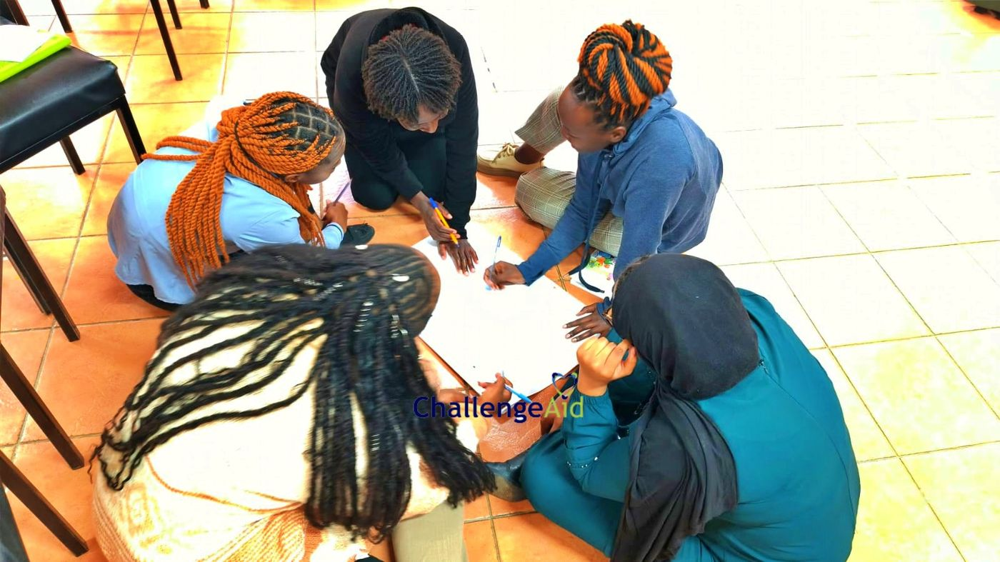
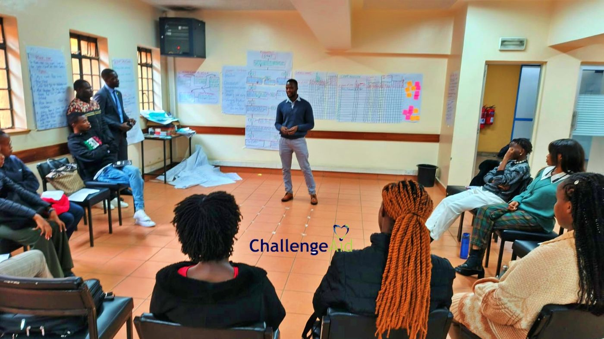
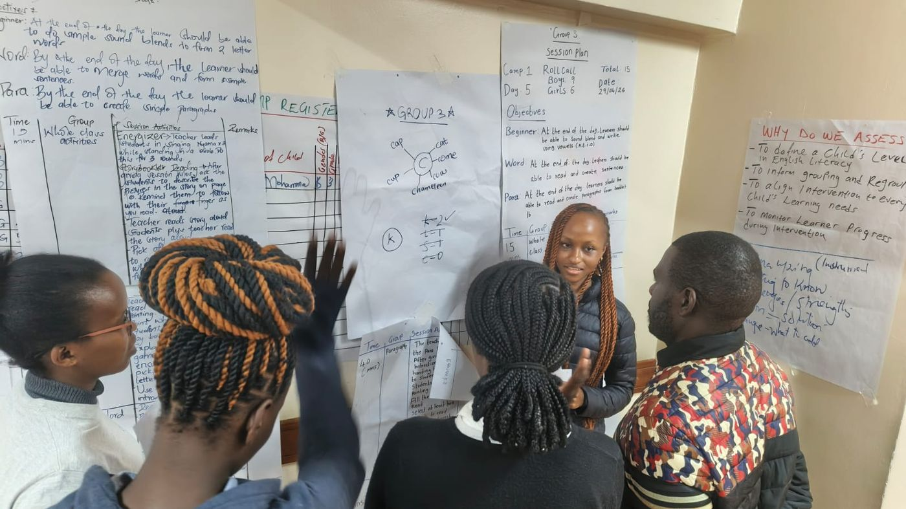

Kajiado Women Empowerment & Schools of Hope Initiative
A Training-of-Trainers model that took adult literacy and numeracy to 1,650+ women and 200+ men, with 60%+ advancing a level.
- Responsibility
- Designed and led the Training-of-Trainers model and oversaw standardised delivery of the Schools of Hope model.
- Scale
- 9 sites across Kenya and Tanzania, supported by a network of 100+ community volunteers.
- Headline result
- 60%+ of participants advanced to a higher literacy or numeracy level, measured with the UWEZO Assessment Tool.
- Management skills shown
- M&E design, volunteer and stakeholder coordination, grant writing, budget tracking, safeguarding.
Theory of change
Goal: To enhance adult literacy, numeracy and school resource management across informal settlements and marginalised rural communities.
Intervention pathway: If we design and run a Train-the-Trainer model using a standardised assessment tool (the UWEZO Assessment Tool) and coordinate a deep network of community volunteers, then local women and school supervisors will gain the practical skills to raise community education standards.
Situation
High illiteracy among adults and operational inefficiencies in rural and informal-settlement schools limited community development and educational progression.
Task
Design and lead a Training-of-Trainers model for the Kajiado Women Empowerment Programme, and oversee the standardised delivery of the Schools of Hope model.
Action
- Design and monitor: Designed and led a Training-of-Trainers model built around the UWEZO Assessment Tool, so progress and literacy gains were tracked and delivery stayed evidence-based across 9 sites.
- Deliver: Coordinated a network of 100+ community volunteers supporting delivery across Kenya and Tanzania, through participatory onboarding, continuous support and stakeholder-driven workshops.
- Fund and account: Authored the successful grant proposal to the Desai Memorial Foundation that secured $5,000+ (KES 650,000) in books and library materials, then trained school supervisors in resource management with transparent budget tracking.
What I led and what the team delivered
I designed and led the Training-of-Trainers model and its M&E framework, wrote the Desai Memorial Foundation proposal and trained school supervisors. Session delivery across the sites was carried out by the community volunteers, supervisors and facilitators I coordinated.



Result
- 60%+ of participants advanced to a higher literacy or numeracy level, measured objectively with the UWEZO Assessment Tool.
- Reached 1,650+ women and 200+ men through the empowerment programme.
- Improved school operational efficiency by 35% through targeted supervisor training.
- Achieved 100% compliance in child protection and safeguarding protocols.
Learnings & sustainability
Deep stakeholder engagement, robust data frameworks and investment in local community volunteers create a multiplier effect. Literacy programmes keep scaling inside communities long after the initial funding ends.